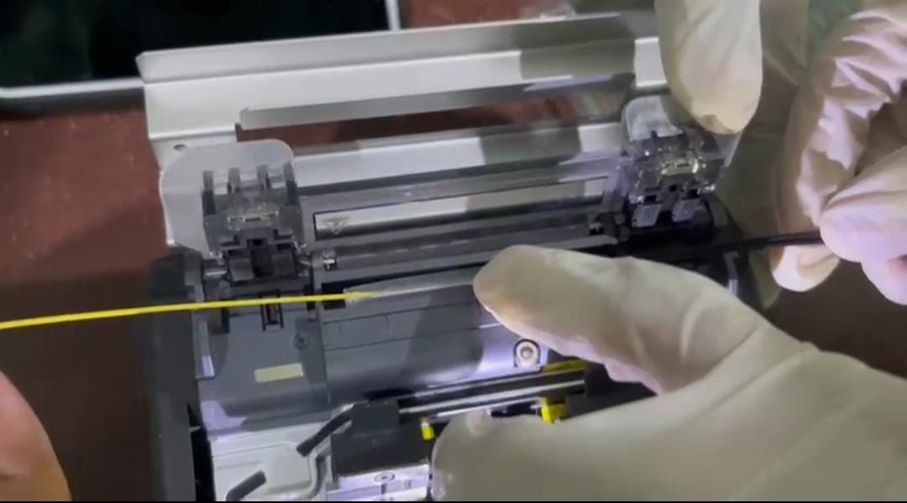
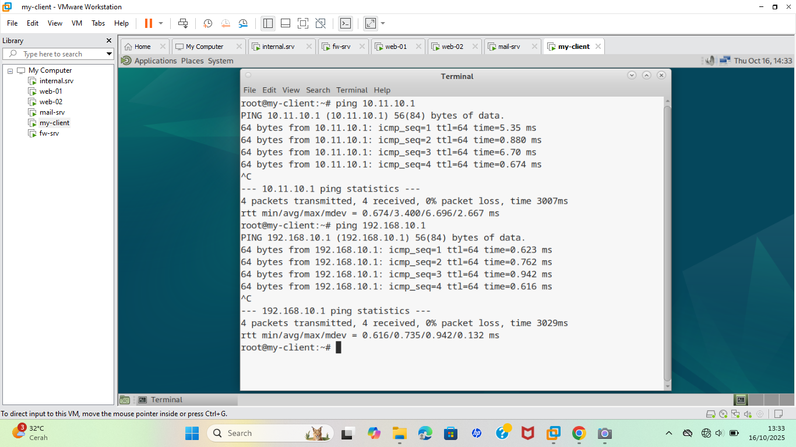
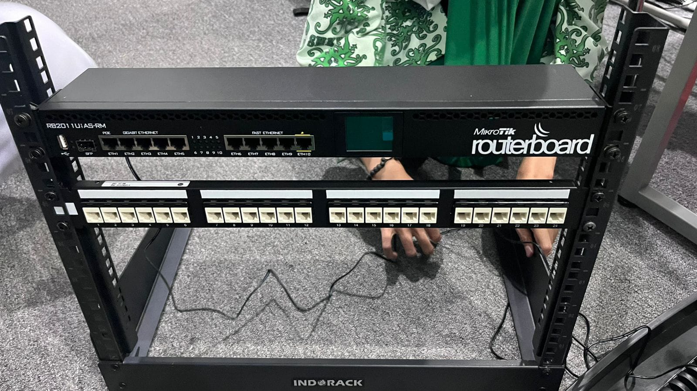

Proyek dan Karya Siswa TKJ
Berikut beberapa contoh proyek yang dikerjakan oleh siswa TKJ untuk meningkatkan kemampuan praktik dan memahami penerapan teknologi di dunia nyata:

Jaringan LAN
Merancang dan menghubungkan jaringan lokal menggunakan switch dan kabel UTP untuk beberpa komputer.

Konfigurasi Server Debian
Membuat server DHCP, DNS, dan WEB menggunakan sistem operasi Linux Debian untuk pembelajaran jaringan berbasis server.

Routing Antar Jaringan
Melakukan konfigurasi routing menggunakan router Mikrotik dan Cisco Packet Tracer agar dua jaringan dapat saling berkomunikasi.